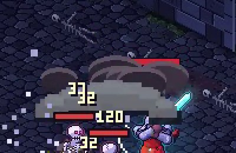
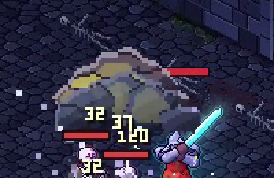
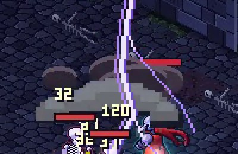
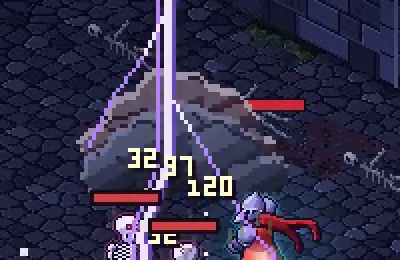
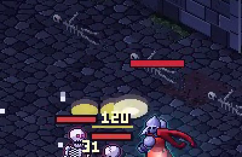
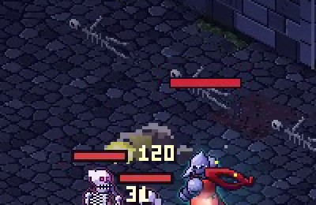
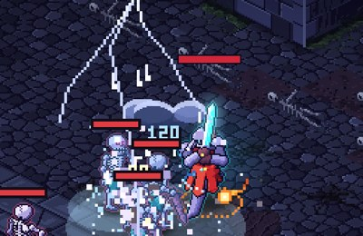
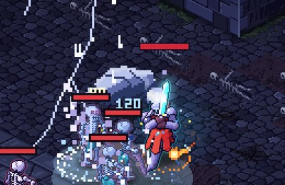

Your words: “I've never liked those clouds so if you want to change them do it”. The old cloud was a heap of flat ovals. The new one is one cloud: billows heaped on a flat, ragged base, each lit from the upper left with a silver edge on top and a dark belly. The lightning glows inside a billow, with a bolt crawling through it, and its underside catches the light. Before on the left, after on the right.
Every Lightning word and meld that leaves a storm on the ground. Here, Stormfront.






Thunder's violet thunderhead and Contagion's green storm get the same new cloud in their own colours.


Tell me in the chat to switch them on, or what to change. The new clouds stay switched off until you say yes.